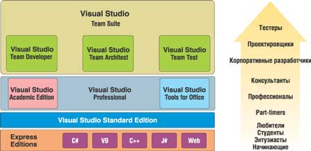

Обсуждая представленную в ноябре прошлого года новую версию Visual Studio 2005, мы уже отмечали*, что главные инновации этого ключевого инструмента Microsoft связаны с продвижением в сторону создания полноценного комплекса для всех этапов создания ПО (моделирование, управление требованиями, тестирование и т. п.) с использованием ролевой модели управления командой разработчиков. Если раньше для решения этих задач требовались продукты третьих фирм (Rational, Borland), то теперь Visual Studio Team System (VSTS) будет их решать самостоятельно, и поставляться он будет также в виде линейки продуктов Team Editions**.
*См. "Microsoft выводит на орбиту VS 2005, SQL 2005 и BizTalk 2006", "BYTE/Россия" No 1'2005.
** Официальное представление VSTS планируется на I квартал 2006 г.
Однако довольно много новшеств в VS 2005 появилось и на уровне традиционного варианта инструмента, с которыми работают отдельные программисты - от начинающих до профессионалов. Это касается и среды разработки (VS IDE), и языков программирования .NET, и, конечно же, среды исполнения .NET Framework. В данной статье мы подробнее рассмотрим именно эти вопросы.
Версии Visual Studio 2005
Microsoft предлагает Visual Studio 2005 в пяти изданиях: Express, Standard, Professional, Team System и для Microsoft Office, которые покрывают потребности всех категорий разработчиков - от начинающих до профессионалов высшего класса (рис. 1).
|  | Рис. 1. Структура и состав семейства Visual Studio 2005.
|
Express представляет собой набор идентичных по составу продуктов, но с поддержкой только одного из языков - VB, VC#, VC++ или VJ#. Это упрощенные варианты средства для создания только Windows-приложений. Кроме того, имеется инструмент для создания динамических Web-сайтов и Web-сервисов - Visual Web Developer 2005 Express Edition (с возможностью программирования на VB и VC#). В состав всех этих продуктов входит SQL Server 2005 Express Edition. В целом они и предназначены в первую очередь для начинающих программистов, любителей или для использования в учебных целях. На коробочные варианты Express установлена вполне символическая цена - до 50 долл. Можно также бесплатно скачать с сайта компании версии со сроком действия 1 год.
Разница между изданиями Standard и Professional для многих целей разработки представляется минимальной, серьезные различия видны, только если речь идет о создании достаточно сложных решений. Оба варианта позволяют разрабатывать Windows- и Web-приложения (в том числе с поддержкой архитектуры x64) и ПО для мобильных устройств. В Professional Edition имеются все возможности Standard плюс средства удаленной отладки, генератор отчетов Crystal Reports (в дополнение к службам отчетов SQL Server Reporting Services), SQL Server Developer Edition, SQL Server Integration и расширенные инструменты для развертывания ПО.
Visual Studio 2005 Team System - это высокопроизводительный, интегрированный, расширяемый набор средств поддержки полного жизненного цикла командной разработки и приложений корпоративного уровня. Он также дает возможность создавать ПО для Intel Itanium. Продукт реализован в трех вариантах - для архитекторов, для разработчиков и для тестеров, в них войдет полный комплект Visual Studio Team Suite (в том числе средства тестирования, моделирования и управления проектами), представленный в виде трех ролевых вариантов. За отдельную плату к нему можно подключить новый сервер Visual Studio Team Foundation Server, предназначенный для более эффективной поддержки работы в команде. Некоторые компоненты VSTS - Visual Source Safe и Visual Studio 2005 Team Test Load Agent - будут также распространяться в виде отдельных продуктов.
Кроме того, в линейку Visual Studio входит инструмент Visual Studio 2005 Tools for the Microsoft Office System - эффективное средство профессиональной разработки решений на базе приложений Office System 2003 (Excel, Word, Outlook и InfoPath). Программирование выполняется на VB и VC#.
Цены на продукты Visual Studio 2005 изменяются в довольно широком диапазоне (примерно от 200 до 5000 долл.) для разных категорий потребителей (частные лица, организации, партнеры, академические структуры). Кроме того, цены сильно зависят от географического региона. Более подробную информацию о различных изданиях Visual Studio 2005 можно найти по адресу http://msdn.microsoft.com/vstudio/.
Интегрированная среда разработки
В состав VS 2005, как и ранее, входят компиляторы четырех языков - VB, VC#, VC++ и VJ#. И все же именно первые два фактически олицетворяют собой этот инструмент и среду .NET Framework. Ведь VC++, несмотря на появление в нем расширений для создания управляемого кода, все же ориентирован на разработку программ в классической архитектуре Win API, и его роль в создании прикладных решений заметно снижается, а VJ# играет лишь вспомогательную роль в деле перехода Java-программистов на конкурирующую платформу.
Внешне изменения среды разработки VS IDE не слишком заметны, хотя если всмотреться внимательнее, те или иные новшества можно найти в каждом ее компоненте. Различия между VB и C# существенно сократились, в том числе и на уровне визуальной среды, большинство новых возможностей применяются в обоих языках, но все же разработчики VS сохранили определенную дистанцию между ними, и C# продолжает оставаться самым развитым .NET-языком. Так, новые средства рефакторинга классов и типов реализованы как раз на уровне IDE, а не языков, и тем не менее некоторые из его функций доступны только для C# (см. также врезку "Расширения Visual Basic 2005").
Поддержка рефакторинга - одно из наиболее существенных новшеств VS IDE. Это позволяет автоматизировать процедуры переименования, перемещения и изменения типизированных элементов кода, исправления порядка описания параметров, имплементации программного интерфейса и ряд других операций. Все это выполняется с помощью нового инструмента моделирования Class Designer (рис. 2), который позволяет визуально представить структуру классов приложения или создать приложение путем визуального определения классов. Если щелкнуть правой кнопкой мыши диаграмму классов, то далее в меню можно выбрать вид операции рефакторинга. Далее выполняются необходимые изменения в диаграмме классов, которые также автоматически корректируют исходный код программы.
| Рис. 2. Новый инструмент Visual Studio Class Designer предоставляет возможности прямого и обратного инжиниринга для объектных классов.
|
Class Designer теперь может рассматриваться как некий базовый инструмент создания приложений, который сводит к минимуму процесс кодирования, используя вместо этого методы визуального проектирования. Так, переместив новый класс с панели инструментов Toolbox на форму конструктора, можно затем визуально добавлять методы, определять взаимосвязи между классами, формировать интерфейсы, создавать структуры и т. п.
Правда, нужно отметить, что Class Designer использует для моделирования нотацию, отличную от широко распространенного UML, хотя и поддерживает включение в проект готовых UML-диаграмм классов. Добавим также, что данный инструмент - не единственное средство просмотра структуры проектов Visual Studio. Например, при работе с приложениями ASP.NET можно анализировать древовидную структуру HTML-документов, что упрощает работу со сложными Web-решениями. А средство Object Browser позволяет изучать иерархическую систему классов, предоставляя одновременно описания всех классов среды .NET Framework, а также возможности фильтрации и сортировки по группам пространств имен, типам объектов и названиям объектов.
.NET Framework 2.0
Появление Visual Studio 2005 сопровождалось выпуском новой версии .NET Framework 2.0, каркаса и среды исполнения .NET-приложений (рис. 3). Здесь также трудно говорить о каких-то революционных изменениях, но на самом деле новшества имеют место практически во всех компонентах системы: на уровнях представления (Windows Forms и Web Forms), бизнес-логики (поддержка транзакций, сериализация, взаимодействие с COM-объектами,.NET Remoting), доступа к данным (ADO.NET и XML.NET), а также поддержки Web-сервисов, средств безопасности, сетевых функций и т. д. Даже просто перечислить все то новое, что появилось в .NET Framework 2.0, невозможно в одной статье, поэтому мы ограничимся тем, что приведем несколько примеров.
| Рис. 3. Общая структура .NET Framework 2.0.
|
Если говорить о приложениях класса Windows Forms, то здесь существенно расширен набор базовых функций и объектов (System.Windows.Forms). Произошли изменения в модели связи компонентов с источниками данных (Data Binding). Новый компонент BindingSource (вместо DataConnector) предоставляет улучшенные возможности связывания данных и элементов управления, в том числе позволяя отслеживать события в источниках данных и изменение хранимой информации, а также автоматически управлять функциями поддержки текущего состояния. Вот неполный список других полезных элементов управления: DataGridView (отображение данных в табличном формате), ToolStrip (контрольные панели в стиле Microsoft Office, IE, Windows XP), MaskedTextBox (окно для текста, отвечающего определенной маске ввода), SoundPlayer (воспроизведение файла формата WAV, загружаемого из ресурса), SplitContainer (двухпанельные интерфейсы), ListView (просмотр списков в стиле WinXP), ActiveDocumentHost (документы Microsoft Office c возможностью редактирования), WebBrowser (версия Internet Explorer в WinForm-приложении с доступом к объектной модели DHTML), FlowLayoutPanel (отображение информации в виде таблицы), BackgroundWorker (упрощение работы с потоками).
Для Web-приложений (Web Forms) теперь все компоненты генерируют код, совместимый со стандартом XHMTL 1.1, поддерживается адаптивный рендеринг, возможность задания различных цветовых схем, а также функции, позволяющие подсчитывать число обращений к тому или иному элементу. Произошли изменения в механизмах связи с источниками данных; в частности, появились новые компоненты, объединяющие строки соединения, запросы и параметры в одно целое и поддерживающие различные источники данных, в том числе Microsoft SQL Server, Microsoft Access, XML-файлы, Web-сервисы и бизнес-объекты, возвращающие наборы данных. Для реализации доступа к данным из бизнес-компонентов служит новый элемент управления ObjectDataSource. Из других популярных компонентов Web Forms назовем GridView (заменяет компонент DataGrid), DetailsView и FormView (отображение и редактирование данных), TreeView (представление иерархической информации, хранимой в XML-документах и реляционных базах данных), SiteMapPath и Menu (навигация).
Управление транзакциями выполняется с помощью классов, входящих в состав нового пространства имен System.Transactions. Так, класс TransactionScope используется для создания простых транзакционных блоков кода, интерфейсы ITransaction и IEnlistmentNotification дают возможность управлять каждой фазой многофазовых распределенных транзакций. В целом же новая транзакционная инфраструктура расширяет и дополняет средства поддержки транзакций COM+, реализованные в пространстве имен System.EnterpriseServices, поддерживая также простые транзакции в рамках одного локального домена приложений (OleTx Transaction Manager и Lightweight Transaction Manager).
Механизм сериализации обеспечивает передачу объектов между уровнями приложения и представлен в двух вариантах: XML-сериализация и бинарная сериализация. Улучшено также взаимодействие с COM-объектами, что повышает эффективность манипуляции ресурсами ОС, защищает эти ресурсы от возможных атак, которые может предпринять неуправляемый код, облегчает взаимодействие с неуправляемым кодом. Значительно улучшена производительность большинства стандартных вызовов между приложениями, находящимися в разных доменах.
В новой версии для .NET Remoting (удаленное взаимодействие .NET-компонентов) реализованы адресация по протоколу IPv6, возможность обмена обобщенными типами, аутентификация и шифрование на уровне интерфейса Security Support Provider Interface (SSPI). Классы нового пространства имен System.Runtime.Remoting.Channels.Ipc позволяют приложениям, выполняемым на одном компьютере, обмениваться данными, не используя сеть. В набор System.Runtime.Remoting.Channels добавлены поддержка безопасности на уровне каналов (канал TCP теперь поддерживает аутентификацию и шифрование) и функции, улучшающие балансирование нагрузки.
Существенно изменились технологии, отвечающие за работу с данными. ADO.NET обеспечивает поддержку типов, определяемых пользователем (User Defined Types, UDT), работу с XML-данными, асинхронные операции с базами данных, возможность работы с набором активных результатов запроса (Multiple Active Result Sets, MARS). Улучшено взаимодействие с SQL Server, новый набор интерфейсов Schema Discovery API позволяет запрашивать информацию о метаданных. В XML.NET добавлено новое хранилище XML-данных с поддержкой модели обработки как XML DOM, так и XPath; реализованы поддержка языка XQuery и технология отображения данных, хранимых в реляционной СУБД, на XML-представление или на объектное представление CLR; расширена функциональность существующих XML-классов; появился новый процессор для преобразований XSLT.
Пространство имен System.Web.Services теперь полностью совместимо с протоколом SOAP 1.2, поддерживает базовый профиль спецификаций WS-I Basic Profile 1.0 и асинхронные вызовы методов Web-сервисов. Добавлена возможность использовать событийно-ориентированную модель вызова методов.
Новый программный интерфейс Data Protection API (DPAPI) включает методы, позволяющие приложениям шифровать пароли, ключи, строки соединения и иную информацию, не вызывая системных функций, предоставляемых платформой.
Интересное новшество .NET - реализация технологии ClickOnce, которая позволяет развертывать клиентские приложения с Web-сервера, запуская их по ссылке, содержащей адрес файла с манифестом данного приложения. После того как манифест загружен, активизируется специальный сервис Windows - Click-Once Host, который проверяет содержимое файла манифеста, загружает необходимые для функционирования приложения сборки, устанавливает ссылки на приложение и создает новый элемент стартового меню.
Впереди Orcas и Hawaii
Дальнейшее развитие средств разработки Microsoft, что вполне естественно, связано с выпуском нового поколения OC Longhorn: клиентская система, уже получившая официальное название Windows Vista, ожидается в конце 2006 г. (ее первая бета-версия вышла в ноябре 2005 г.), а серверная пока именуется Windows Server Longhorn и появится годом позже. Следующая версия Visual Studio с кодовым именем Orcas должна будет поддерживать эти ОС со всеми их новшествами, но в каком виде это будет и когда - пока не ясно. Сначала Microsoft хотела выпустить Orcas одновременно с Windows Vista, но, судя по последним сведениям, его выход, возможно, будет привязан к серверному варианту.
Как известно, объектная модель Longhorn, WinFX, полностью построена на платформе .NET Framework 2.0 и включает сейчас три базовых компонента - Windows Presentation Foundation (WPF), Windows Communication Foundation и Windows Workflow Foundation. Четвертая составная часть - новая система управления файлами WinSF - представлена пока лишь предварительной версией и будет выпущена только в составе серверной ОС Longhorn.
Презентационный слой WPF использует декларативную модель программирования, получившую название Extensible Application Markup Language (XAML). С ее помощью подход к настройке пользовательского интерфейса, отработанный в Web, реализуется применительно к Windows Forms. В коммуникационном наборе WCF также применяется новая технология на базе Web Services. Все это должно найти отражение в Orcas.
Помимо этого, есть все основания полагать, что языковые средства будут также развиваться в сторону повышения эффективности работы с базами данных. Это будет реализовано с помощью Language Integrated Query (LINQ) - специального языка для .NET Framework, долженствующего упростить работу с данными. LINQ представляет собой единый набор расширений для C# и Visual Basic, использующий унифицированную программную модель для построения интегрированных запросов к объектам, базам данных и XML-структурам. Фактически это должно связать воедино существующие сегодня технологии ADO.NET и XML.NET. В LINQ используются наработки, полученные в исследовательском проекте создания языка нового поколения C-Omega в кембриджской лаборатории Microsoft Research. Однако вполне вероятно, что все эти возможности будут привязаны к новой системе управления файлами WinFS, которая, в свою очередь, строится на движке SQL Server 2005.
Говоря о перспективах развития Visual Studio, нужно также упомянуть о том, что на конференции PDC'2005 в сентябре прошлого года Microsoft анонсировала планы создания базовой среды разработки и исполнения клиентских Web-приложений (она получила кодовое название Atlas) с использованием подхода Asynchronous JavaScript & XML (AJAX), а также нового комплекта инструментов под названием Microsoft Expression для проектирования пользовательского интерфейса новых версий Web- и Windows-платформ Microsoft. Там же были продемонстрированы прототипы некоторых средств: Acrylic Graphic Designer (работа с графическими данными), Sparkle Interactive Designer (проектирование Windows-интерфейса) и Quartz Web Designer (создание Web-сайтов).
И, завершая разговор о перспективах Visual Studio, сообщим, что кодовое имя версии этого инструмента, следующей после Orcas, уже известно - Hawaii.
Расширения Visual Basic 2005VB2005 пополнился целом рядом конструкций, способных повысить комфортность программирования на нем. Конечно, на фоне концептуальных новшеств Visual Studio это кажется не очень важным, но для реальных программистов может как раз стать "приятным пустячком". В синтаксисе появилось несколько полезных ключевых слов. Например, оператор Continue позволяет прервать выполнение текущего цикла и перейти к следующему в конструкциях For/Next, While и Do/Loop. Это выглядит, например, следующим образом:
В VB.NET слово Using применялось в блоке общих описаний модуля для подключения пространств имен. Теперь же оно может использоваться и для динамического создания/освобождения различных ресурсов (например, COM-объектов) внутри процедур:
В данном случае переменные conn и ds доступны только в пределах блока Using. В VB2005 Microsoft впервые реализовала возможность применения беззнаковых целых чисел - появилось сразу три новых типа данных: UShort, UInteger и ULong, длиной соответственно 2, 4 и 8 байтов. Правда, говорить за это "спасибо" корпорации не очень хочется: необходимость в них существовала еще двадцать лет назад, во времена QuickBasic/DOS, но Microsoft откровенно игнорировала эти потребности разработчиков. Но все же лучше поздно… Описание программных компонентов, находящихся в различных библиотеках классов, - довольно нудное занятие. В VB2005 эта задача немного упростилась за счет появления нового логического пространства имен, которое включает наиболее часто используемые функции .NET Framework, реализованные в объектах Application, Computer, Forms, Resources, Settings, User и WebServices. Вот как теперь можно программно проиграть системный звук: My.Computer.Audio.PlaySystemSound( _ SystemSounds.Exclamation)
В VB.NET 2003 эта же операция реализовалась следующим образом:
Ранее весь исполняемый код класса (функции, методы) хранился в одном физическом файле. Теперь в VB2005, используя ключевое слово Partial, можно разнести его по разным файлам, например, следующим образом:
Такой подход очень полезен, когда нужно разделить код, автоматически генерируемый конструктором, и бизнес-логику программы. В VB2005 такое распределение кода по разным модулям выполняется самим конструктором. Новшество .NET 2.0 Framework, доступное всем языкам, работающим в этой среде (в том числе C# и VB2005), - описание классов без точной фиксации типа данных на этапе написания кода. Этот подход называется Generics, а его синтаксис реализуется с помощью ключевого слова Of. В качестве примера рассмотрим класс MyQueue (см. листинг), к которому можно обращаться с использованием данных любого типа:
Раньше для подобных конструкций нужно было использовать универсальный тип данных Object. Принципиальное новшество Generics заключается в том, что в каждом конкретном случае применения такого класса задается тип данных в явном виде, причем на этапе компиляции. Поэтому очевидно, что Generics работает быстрее при выполнении кода, а главное - предотвращает возможные конфликты данных. Поможет программистам и новый метод вставки готовых часто используемых фрагментов кода (code snippets), распределенных по различным категориям. Microsoft обещает включить в окончательный вариант VB2005 более пятисот таких заготовок. Файлы с этими кодами записаны в формате XML и хранятся в каталоге C:\Program Files\Microsoft Visual Studio 8\Vb\Snippets\1033. Их легко пополнять, создавать и редактировать самостоятельно. В языках C# и Java и раньше можно было применять XML-структуры в комментариях программы. Теперь такая возможность реализована и в VB - это поможет повысить качество документирования кода. Такие комментарии можно затем автоматически перенести в справочный файл с помощью инструментов третьих фирм, например, NDoc (http://ndoc.sourceforge.net). Целый ряд новшеств Visual Studio 2005 реализован на уровне редактора кода. Ранее при обнаружении синтаксической ошибки строка текста просто подсвечивалась с указанием в отдельном окне возможной причины. Теперь VS 2005 сразу предлагает выбрать правильное ключевое слово. Функция Autocorrect поможет и в следующем случае: например, вы сделали ссылку в своем проекте на библиотеку System.Data.dll для доступа к ADO.NET, но забыли импортировать пространство имен System.Data. В этом случае VB не сможет объявить переменную SqlDataReader, но сейчас Autocorrect сама предложит возможные способы исправления ошибки - в данном случае определить правильное имя для класса SqlDataReader. Пригодится VB-программистам и новая функция Exception Assistant, предлагающая помощь в исправлении ошибок, обнаруженных в процессе выполнения проекта. В частности, если вы забыли указать ключевое слово New при создании экземпляра объекта, Exception Assistant попробует исправить эту оплошность без перезапуска программы (рис. 4).
|